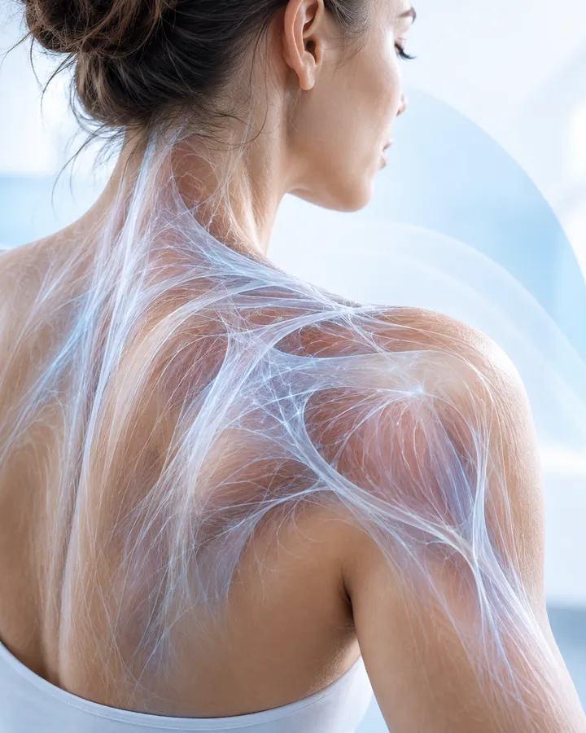

Mobilidade
- Pode auxiliar a ampliar a amplitude de movimento em determinadas situações.
- Pode contribuir para a sensação de maior liberdade ao se mover no dia a dia.
Liberação Miofascial em Rio Claro e região
Seja para lidar com tensões do dia a dia ou para cuidar do corpo após a prática esportiva, conheça as possibilidades dessa técnica.
Quero agendar uma avaliaçãoPara pessoas com rigidez muscular, desconfortos nas costas, lombar, pescoço e ombros, especialmente quando afetam a rotina.
Para quem pratica musculação, CrossFit, corrida e outras modalidades e busca cuidar da mobilidade, flexibilidade e recuperação muscular.
Para quem apresenta sensação de músculos encurtados, pontos de tensão ou restrições de mobilidade que precisam de avaliação profissional.
Um dia comum
Os primeiros movimentos parecem mais duros do que deveriam, e levantar da cama já pede um pouco de paciência.
Costas e lombar pedem uma pausa que a agenda raramente oferece, e a postura vai se acomodando ao cansaço.
Como se carregassem o dia inteiro. A tensão sobe, e a vontade é só de soltar os ombros.
A sensação de rigidez insiste em ficar, e o descanso sozinho nem sempre parece suficiente.
Se alguma dessas cenas é familiar, saiba que existe um caminho de cuidado, e ele começa por entender melhor o seu corpo.

A rede fina que envolve e conecta cada músculo do corpo.
A técnica
É uma técnica manual em que o profissional trabalha, com pressões suaves e deslizamentos lentos, sobre a fáscia (a membrana que reveste os músculos) e sobre a própria musculatura.
O foco está nas áreas de tensão e na mobilidade do corpo. Cada toque é ajustado ao ritmo e ao conforto de quem está sendo atendido.
Possibilidades
Para quem é indicada
Não é sobre um perfil único, mas sobre o que o seu corpo está pedindo agora.
Do trabalho em pé ao computador, tensões que se repetem todo dia podem merecer um olhar atento e um cuidado regular.
Quem treina com frequência pode incluir o cuidado miofascial na rotina de recuperação.
Sensação de encurtamento ou de “travas” ao se movimentar merece avaliação profissional para entender o melhor caminho.
A técnica pode integrar o cuidado de diferentes desconfortos musculares, de acordo com as necessidades e a avaliação de cada paciente.
Auxílio no manejo de tensões nas costas, lombar, pescoço e ombros.
Trabalho direcionado a áreas de tensão e desconforto muscular.
Outras situações, sempre dependentes de avaliação profissional
Possível abordagem complementar, individualizada e integrada ao acompanhamento médico.
Cuidado das tensões musculares cervicais e dos ombros que podem estar associadas às dores de cabeça.
Possível recurso complementar em situações específicas, conforme avaliação.
Exige avaliação específica. A liberação miofascial não substitui o tratamento da compressão nervosa.
Pode integrar o cuidado de tecidos musculares associados, quando houver indicação profissional.
Pode integrar o cuidado de tecidos musculares associados, quando houver indicação profissional e sem substituir o tratamento específico.
A técnica não substitui diagnóstico, acompanhamento médico ou tratamento específico de cada condição.

Liberação miofascial no esporte
A liberação miofascial pode complementar a rotina de cuidados de quem pratica musculação, CrossFit, corrida e outras atividades físicas.
Espaço Vitali
Depoimentos do Google
Avaliações reais de pacientes, publicadas no Google.
Estive com o Júnior para a massoterapia, foi excelente. Júnior é super atencioso e excelente profissional. Recomendo!
Ótimo lugar de massoterapia, muito bons profissionais
Espaço amplo, limpo e organizado! Profissionais comprometidos com seus pacientes! Parabéns a Equipe Vitali!
Otimo atendimento, otimos profissionais
Super recomendo profissional muito experiente
A melhor massagem do Brasil!!!!
Maaaraaavilhoso este espaço. É um lugar de pessoas abençoadas. 🥰🥰🥰🥰🥰🥰
Recomendo, funcionários super atenciosos e ótima estrutura.
Dúvidas
Respostas gerais e informativas. Cada caso é único e deve ser avaliado por um profissional.
É uma conversa inicial sobre suas queixas, sua rotina e seu histórico de saúde, seguida da observação da postura e dos movimentos. A partir disso, o profissional define se a técnica pode ser indicada e de que forma.
Não há um número fixo. A quantidade e a frequência variam conforme a necessidade de cada pessoa e são definidas pelo profissional após a avaliação, podendo ser reavaliadas ao longo do cuidado.
Em pontos de maior tensão, pode haver uma sensação de desconforto tolerável. A pressão é ajustada ao seu limite, e você pode (e deve) avisar o profissional sempre que algo não estiver confortável.
Algumas condições, como processos inflamatórios ou infecciosos agudos, lesões recentes, alterações circulatórias ou uso de certos medicamentos, podem exigir cautela ou impedir a técnica. Por isso é importante informar todo o seu histórico de saúde na avaliação, e, quando necessário, buscar orientação médica.
Sim, a técnica pode complementar a rotina de cuidados de quem pratica atividades físicas, conforme avaliação. Conte ao profissional qual a sua modalidade e como é a sua rotina de treinos.
Não. A liberação miofascial não substitui diagnóstico, acompanhamento médico nem o tratamento específico de qualquer condição. Ela pode ser um cuidado complementar, sempre em diálogo com a orientação do seu médico.
Agende sua avaliação
Converse com a nossa equipe pelo WhatsApp e tire suas dúvidas. Estamos aqui para acolher você.
Agendar pelo WhatsAppAv. 34, nº 974, entre Ruas 7 e 8
Santana, Rio Claro/SP
Segunda a sexta, das 07h às 20h